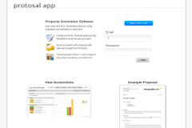

Featured Projects

Backbone Tutorials

Cdn Js

Protosal
About me
I have spent the last 10 years of my short life on the internet learning the good , bad and ugly parts.
Went to the University of Queensland for two years before the cruel nature of modern education took its toll forcing me to drop-out. Started free-lancing and working on open source projects.
Currently working at Ephox as a front-end developer with some of the coolest people I have ever met.
Skills
- Backbone.js
- Node.js
- Front-end
- Back-end
- Dancing
Fun facts
- Can benchpress 110kg 4+ times
- Lives in Australia
- Free spirit
- I was pretty drunk when I designed this site
Blog
- 10 Jul 2011 » A Moral Dilemma On Forgiveness and Hatred
- 07 Jul 2011 » The Elevator. Sexism or gender stereotyping?
- 05 Jul 2011 » Is the Internet an extension of human memory?
- 07 Mar 2011 » javascript - pass "this" to your anonymous functions
- 04 Mar 2011 » jQuery 1.5 - create deferred object with callback parameters
- 07 Feb 2011 » restful ajax web app basics ( mimic gmail with backbone.js )
- 05 Feb 2011 » backbone.js beginners and underscore.js micro templating
- 01 Feb 2011 » Backbone.js Tutorial - by noob for noobs
Contact
- email - thomasalwyndavis@gmail.com
- github - @thomasdavis
- twitter - @neutralthoughts